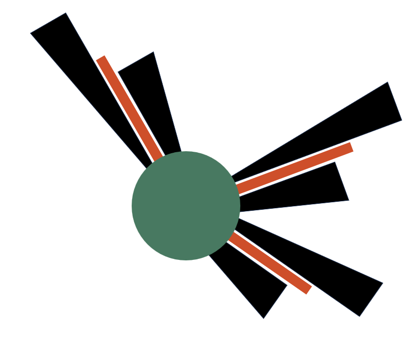

Selected Publications
- E. Koukas, A. Papoutsakis, M. Gavaises. Numerical investigation of shock-induced bubble collapse dynamics and fluid solid interactions during shock-wave lithotripsy. Ultrasonics Sonochemistry. 31 May 2023. Volume: 95
- S. Bidi, Ph. Koukouvinis, A. Papoutsakis, A. Shams, M. Gavaises. Numerical study of real gas effects during bubble collapse using a disequilibrium multiphase model. Ultrasonics Sonochemistry. 1 Oct 2022. Volume: 90
-
Papoutsakis, F. Luddens, I. Danaila and M. Gavaises. Droplet nuclei caustic formations in exhaled vortex rings, Nature Scientific Reports , 12, Article number: 3892 (2022).
- Andreas Papoutsakis, Manolis Gavaises. A model for the investigation of the ''second--order'' structure of caustic formations in dispersed flows, Journal of Fluid Mechanics, February 2020, DOI:10.1017/jfm.2020.176
-
Andreas Papoutsakis, Phoivos Koukouvinis, Manolis Gavaises. Solution of cavitating compressible flows using Discontinuous Galerkin discretization Journal of Computational Physics, March 2020. DOI: 10.1016/j.jcp.2020.109377
-
Andreas Papoutsakis. Extension of the Fully Lagrangian Approach for the Integration of the Droplet Number Density on Caustic Formations. In: Constanda C., Harris P. (eds) Integral Methods in Science and Engineering. Birkhäuser, Cham, Springer Nature Switzerland AG 2019
-
Ionut Danaila, Francky Luddens, Felix Kaplanski, Sergei S. Sazhin, Andreas Papoutsakis. An efficient Formation number of confined vortex rings. September 2018 Physical Review Fluids 3(9), DOI: 10.1103/PhysRevFluids.3.094701
-
Andreas Papoutsakis, Sergei S. Sazhin, Steven Begg, Ionut Danaila, Francky Luddens. An efficient Adaptive Mesh Refinement (AMR) algorithm for the Discontinuous Galerkin method: applications for the computation of compressible two-phase flows. Journal of Computational Physics 03/2018; DOI:10.1016/j.jcp.2018.02.048
-
Andreas Papoutsakis, Oyuna D. Rybdylova, Timur S. Zaripov, Luminita Danaila, Alexander N. Osiptsov, Sergei S. Sazhin. Modelling of the evolution of a droplet cloud in a turbulent flow. International Journal of Multiphase Flow 03/2018; DOI:10.1016/j.ijmultiphaseflow.2018.02.014
-
Konstantinos T. Panourgias, Andreas Papoutsakis, John A. Ekaterinaris. High-resolution p-adaptive DG simulations of flows with moving shocks. International Journal for Numerical Methods in Fluids 05/2014; 75(3)., DOI:10.1002/fld.3893
-
Andreas. Kronenburg, Andreas Papoutsakis: Conditional moment closure modeling of extinction and re-ignition in turbulent non-premixed flames. Proceedings of the Combustion Institute 01/2005; 30(1):759-766., DOI:10.1016/j.proci.2004.08.235
-
Andreas Papoutsakis, Konstantinos Panourgias, John A. Ekaterinaris. Discontinuous Galerkin Discretization of Chemically Reacting Flows. 52nd AIAA. SciTec; 01/2014, DOI:10.2514/6.2014-0068
-
Nikos Kyriazis, John Ekaterinaris , Andreas Papoutsakis, Konstantinos Panourgias. Numerical investigation of the effect of turbulence modeling for flows with shocks and vortical structures. 51st AIAA Aerospace Sciences Meeting including the New Horizons Forum and Aerospace Exposition; 01/2013, DOI:10.2514/6.2013-406
-
Manolis Gavaises, Andreas Papoutsakis, Andreas Theodorakakos, Emmanuel Giannadakis, Dimitrios Papoulias. LES Predictions of the Vortical Flow Structures in Diesel Injector Nozzles. SAE 2009 World Congress; 04/2009, DOI:10.4271/2009-01-0833 Conference Proceedings
-
Andreas Papoutsakis, Manolis Gavaises. Numerical investigation of Fluid Structure Interaction in elastic soft matter using a diffused interface approach. 3rd International Conference on INTERFACIAL PHENOMENA AND HEAT-MASS-TRANSFER Marseille, France, 5-9 of July 2020
-
Andreas Papoutsakis, Phoivos Koukouvinis, Manolis Gavaises. Adaptive mesh interface capturing for cavitating compressible flows using Discontinuous Galerkin discretization. Conference: ILASS Europe 2019, 29th Conference on Liquid Atomization and Spray Systems, 2-4 September 2019, Paris, France
-
Andreas Papoutsakis. Extension of the Fully Lagrangian approach for the integration of the droplet number density on caustic formations. 15th International Conference on Integral Methods in Science and Engineering, University of Brighton. Brighton UK. 16 – 20 July 2018.; 02/2018
-
A Papoutsakis, I Danaila, F Kaplanski, F Luddens, S S Sazhin. “Numerical modelling of confined Vortex Rings”. The 28th International Symposium on Transport Phenomena 22-24 September 2017, Peradeniya, Sri Lanka; 09/2017
-
Andreas Papoutsakis, Sergei Sazhin, Steven Begg, Ionut Danaila, and Francky Luddens: “A new approach to modelling the two-way coupling for momentum transfer in a hollow-cone spray”. ILASS2017 - 28th European Conference on Liquid Atomization and Spray Systems; 09/2017, DOI:10.4995/ILASS2017.2017.4671
-
Andreas Papoutsakis, Oyuna Rybdylova, Sergei Sazhin, Luminita Danaila, Timur Zaripov. “Modelling of the Evolution of a Droplet Cloud in a Turbulent Flow”. In: ILASS – Europe 2016, 27th Annual Conference on Liquid Atomization and Spray Systems, Brighton, UK, 4-7 September 2016.; 09/2016
-
Papoutsakis, A. Kronenburg and W. P. Jones. “Assessment of Sub-Grid Scale Modelling for Large Eddy Simulation during Transition from Laminar to Turbulent Flow”. European Combustion Meeting 2005; 04/2005